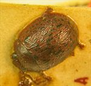
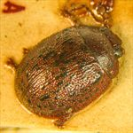
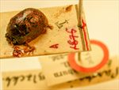
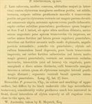

Click on images to enlarge
.jpg){kind=link}

Fig. 1. Paropsis tincticollis type specimen, dorsal view
.jpg){kind=link}

Fig. 2. Paropsis tincticollis type specimen, dorsal view
.jpg){kind=link}

Fig. 3. Paropsis tincticollis type specimen and labels
{kind=link}

Fig. 4. Paropsis tincticollis, description
Name
Paropsis tincticollis Blackburn, 1896
Corresponds to
possibly Ta154, but see discussion in Diagnosis and Notes.
Diagnosis and Notes
Blackburn (1896) deals with T. tincticollis as part of his 'subgroup iii' (i.e., those species without "strongly marked characters", whose greatest height is not or scarcely in front of the middle of the elytral margin and whose elytra are not depressed under the humeral callus). Within that group, he characterises it as:
A. Elytra with a distinct postbasal impression on disc;
B. Elytral margin (viewed from the side) straight or but little sinuous;
CC. Elytral interstices not, or but very feebly, rugulose, not obscuring the punctures;
DD. Prothorax not, or but little, rugulose;
EE. Species of more convex form [than grossa or seriata]; upper outline (viewed from side) a continuous curve;
F. Prothorax closely punctulate;
G. Prothorax with black markings;
HH. Underside black.
B.J. Selman identified the species introduced into South Africa in the early 1980s (which is Ta154, by comparison with specimens from South Africa) as T. tincticollis (Tribe & Cillié, 1997). Certainly, typical specimens of Ta154 looks very much like the holotype of T. tincticollis, with their elytral surfaces featuring relatively prominent black verrucae that are roughly linear in their arrangement and the ventral surface dark, with paler legs. However, there is another S.W. Australian species, Ta188, that has a rather similar appearance to Ta154. A strong argument can be made, I believe, that the T. tincticollis holotype actually is the same as Ta188:
(1) The male holotype length is >7 mm, while the largest male of Ta154 that I have seen (from a sample of 7) is less than 6.5 mm. Tribe and Cillie (1997) give the size of the species (determined from 67 specimens of each sex from South Africa) as 6.19 mm (±0.32) for males and 6.94 mm (±0.43) for females. I have only seen three males of Ta188, with lengths ranging from 6.4-6.7 mm, with females (9) ranging from 7.5-8.2 mm.
(2) The distribution and density of the black verrucae on the elytra of specimens of Ta154 differs slightly from the holotype, but is more typical of specimens of Ta188. In Ta154, the verrucae are more densely placed, often with a heavier concentration that roughly line up transversely just behind the ante-median depression, while that is much less so in Ta188.
(3) the black ventral surface and paler legs that Blackburn uses to distinguish it from similar species such as T. granaria are present in both Ta154 and Ta188.
It is of course possible, but less likely, that Ta154 and Ta188 are actually the same species. See discussion in Ta154 notes.
Type specimen
Location: BMNH
Label data: /“Type” (red-bordered circle)/ “Blackburn coll. 1910-236.”/ “Paropsis tincticollis Blackb.” [this is a carded specimen, with “A 1895 T]” written on card]/.
Male; length = 7.4 mm (approx., measured May 28, 2018). The length may actually be as low as about 7 mm, as carded specimens often end up with the pronotum more or less extruded, something that is impossible to verify without removing the specimen from the card.
Original description
Translation of original description (Figure 4) by ChatGPT, 04/2026:
♂. Somewhat broadly ovate, moderately convex, of greater height (in lateral view), with the highest point placed opposite the middle of the elytral margin; fairly shiny; testaceous, the underside, with the pronotum having four rather small spots arranged transversely, and the elytra with rather large, slightly raised, fairly numerous black verrucae; antennae somewhat infuscate toward the apex. Head closely and finely punctulate. Pronotum broader than long as about nearly 3 to 1, from the apex broadened beyond the middle, anteriorly less narrowed, behind the apex scarcely transversely impressed, fairly closely and not very strongly (coarsely rugulose at the sides) punctulate; sides fairly strongly rounded, not at all flattened, posterior angles rounded. Scutellum scarcely punctulate. Elytra not depressed below the humeral callus, behind the base transversely impressed, fairly closely and strongly somewhat in rows (much more coarsely at the sides) punctulate; with fairly numerous verrucae arranged in rows; interspaces scarcely rugulose (except at the sides); marginal part less distinctly separated from the disc; the inner margin of the humeral callus slightly more distant from the suture than from the lateral margin of the elytra; basal ventral segment sparsely and not very strongly punctate. Length 3½ lines (~7.4 mm); width 2⅗ lines (~5.5 mm).
References
Blackburn, T. 1896, "Revision of the genus Paropsis. Part I", Proceedings of the Linnean Society of New South Wales, vol. 21, no. 4, 637-693 (page 684).
Tribe, G.D. and Cillié, J.J. (1997), "Biology of the Australian tortoise beetle Trachymela tincticollis (Blackburn) (Chrysomelidae: Chrysomelini: Paropsina), a defoliator of Eucalyptus (Myrtaceae), in South Africa", African Entomology, Vol. 5, no. 1, 109-123 (page 122).
Copyright © 2026. All rights reserved.